Scroll through the regional system in chronological order. Every card has the date, an image, the two-sentence why-it-matters, and a one-line exam-ready phrasing you can drop into an essay.
British Foreign Secretary Arthur Balfour writes Lord Rothschild that HMG views “with favour” a Jewish national home in Palestine while preserving the rights of “existing non-Jewish communities.” It is the first great-power commitment to Zionism — and the foundational ambiguity of Israel/Palestine.
“The regional ‘Palestine question’ begins not in 1948 but in a 67-word British letter that promised the same land twice.”
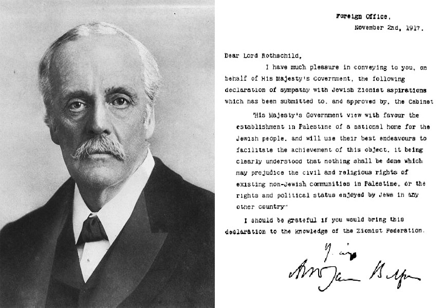
Arthur Balfour with the text of the Declaration. Wikimedia Commons, public domain.
UN Partition Plan (UNGA 181)
The General Assembly votes 33–13 to partition Mandatory Palestine into a Jewish state, an Arab state, and an internationalised Jerusalem. The Yishuv accepts; the Arab Higher Committee and the Arab League reject. Civil war begins the next day.
“UNGA 181 is the legal scaffold every later peace plan implicitly returns to — and the moment the regional system stopped being a colonial map.”
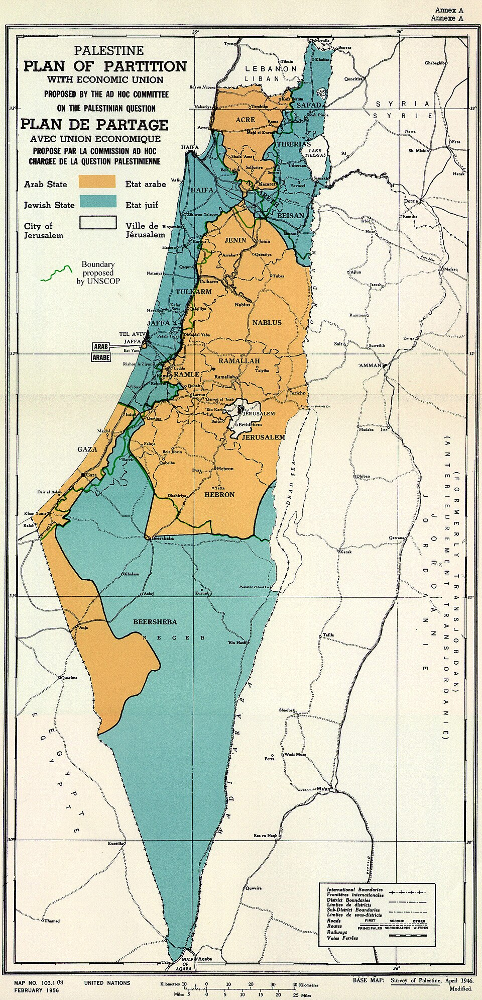
UN Palestine Partition map, 1947. Wikimedia Commons, public domain.
Israeli Independence + the Nakba
Ben-Gurion proclaims the State of Israel; five Arab armies invade the next morning. By the 1949 armistices, Israel holds 78% of Mandate Palestine and ~750,000 Palestinians have been displaced — the Nakba (“catastrophe”).
“1948 simultaneously created a state and a refugee question; both still anchor the regional bargain.”

Declaration of the State of Israel, Tel Aviv, 14 May 1948. Wikimedia Commons, public domain.
After Nasser nationalises the Suez Canal, Britain, France, and Israel collude to invade. Eisenhower forces a humiliating Anglo-French withdrawal — ending European primacy in the region and crowning the US and USSR as the new external patrons.
“Suez 1956 is the hinge from European to superpower order; every Cold War alignment in MENA flows from it.”
British carriers during the Suez Crisis, 1956. Wikimedia Commons, public domain.
Israel destroys the Egyptian, Jordanian, and Syrian air forces and seizes Sinai, Gaza, the West Bank, East Jerusalem, and the Golan Heights. UNSC 242 articulates “land for peace” — the formula that still structures every negotiation.
“1967 produced the occupation that defines Israeli politics and the diplomatic formula (242) that defines every peace track.”
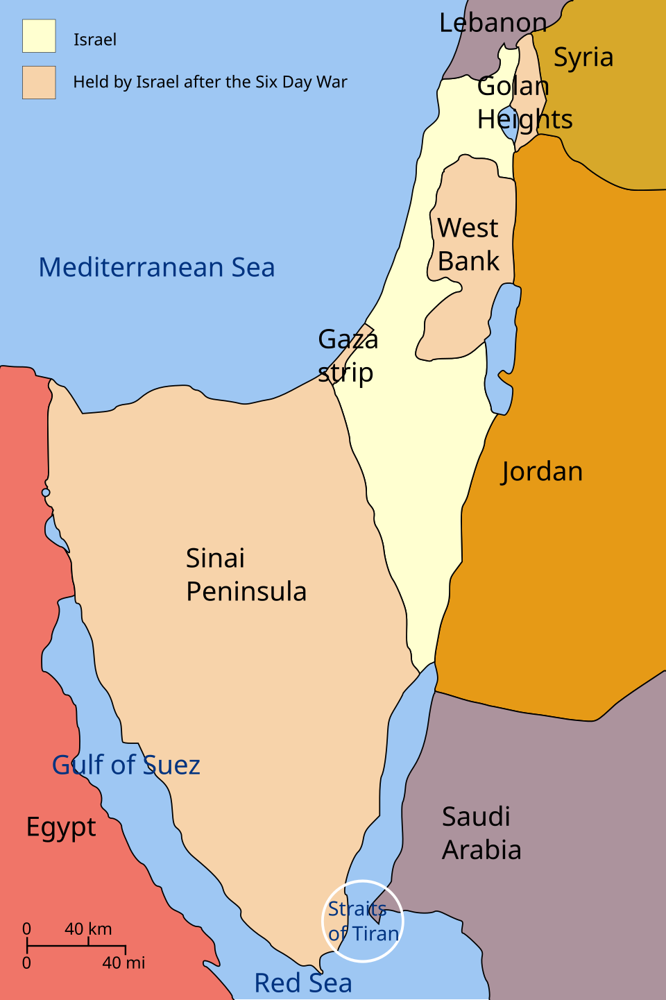
Six-Day War territories, 1967. Wikimedia Commons, public domain.
Yom Kippur / October War & UNSC 338
Egypt and Syria launch a coordinated surprise attack on Yom Kippur; after early Arab gains Israel rallies, but the political shock breaks the post-1967 deadlock. UNSC 338 ties any settlement to 242 and triggers Kissinger’s shuttle diplomacy.
“1973 was a tactical Israeli recovery and a strategic Arab victory — it pushed Sadat toward Camp David.”
Anwar Sadat, who launched the October War and pivoted Egypt to peace. Wikimedia Commons, public domain.
Carter, Sadat, and Begin reach the Camp David framework; the Egypt–Israel Treaty follows in March 1979. Egypt becomes the first Arab state to recognise Israel, exits the rejection front, and is suspended from the Arab League.
“Camp David removed the largest Arab army from the war ledger and made bilateral peace the new template.”

Begin, Carter, and Sadat at Camp David, 1978. US government, public domain.
Khomeini returns to Tehran; the Shah’s regime collapses; the Islamic Republic is founded by April referendum. The US loses its key Gulf pillar; Iran exits the pro-Western camp and begins building a transnational revolutionary project.
“1979 birthed the Islamic Republic — and with it the Sunni–Shi’a regional cleavage that still structures every alliance.”
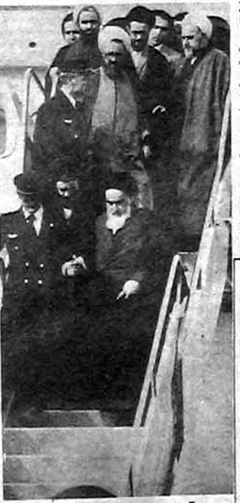
Ayatollah Khomeini, leader of the 1979 revolution. Wikimedia Commons, public domain.
Israel Invades Lebanon · Hezbollah Founded
Operation Peace for Galilee pushes the IDF to Beirut to expel the PLO; in the resulting vacuum Iran’s Revolutionary Guards midwife Hezbollah from local Shi’a militias. The Iran–Lebanon corridor — and the Axis of Resistance — is born.
“1982 is when Iran’s regional reach becomes operational, not just rhetorical.”
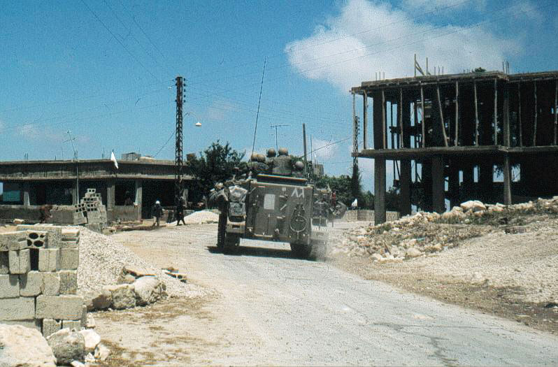
Israeli troops in south Lebanon, 1982. Wikimedia Commons, public domain.
A traffic incident in Gaza ignites a mass uprising of strikes, stone-throwing, and civil disobedience across the West Bank and Gaza. The Intifada propels Palestinian self-organisation, weakens external Arab tutelage, and pushes Israel toward direct negotiation.
“The First Intifada turned the Palestinian question from an inter-state issue into a society-vs-occupation issue.”
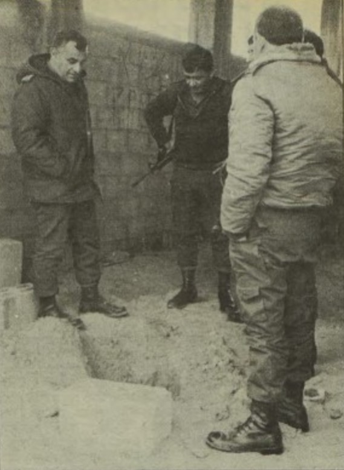
First Intifada, late 1980s. Wikimedia Commons, public domain.
Oslo I Accord — White House Lawn
Rabin and Arafat shake hands under Clinton; the PLO recognises Israel, Israel recognises the PLO as the Palestinian representative, and the Palestinian Authority is created. The Oslo process introduces Areas A/B/C and “interim status.”
“Oslo replaced rejectionism with phased autonomy — and froze a ‘temporary’ division of the West Bank that has now lasted three decades.”

Clinton, Rabin, and Arafat at the White House, 1993. US government, public domain.
Arab Peace Initiative (Beirut Summit)
Saudi Crown Prince Abdullah’s plan, adopted by the Arab League, offers full Arab normalisation in exchange for Israeli withdrawal to 1967 lines, a just refugee solution, and a Palestinian state. It re-bundles the bilateral peace tracks into a regional offer.
“The 2002 API is the standing Arab counter-offer that every later track — Abraham Accords included — has had to address or evade.”
Arab Peace Initiative ministerial delegation. US State Department, public domain.
The US-led coalition topples Saddam Hussein; the de-Baathification and disbanding of the Iraqi army shatter the Sunni-led order. Iran becomes the principal regional winner, gaining a Shi’a-majority neighbour aligned in Baghdad and a corridor to Damascus and Beirut.
“2003 is the unintended Iranian regional opening — Tehran’s reach to the Mediterranean was paid for in US blood and treasure.”
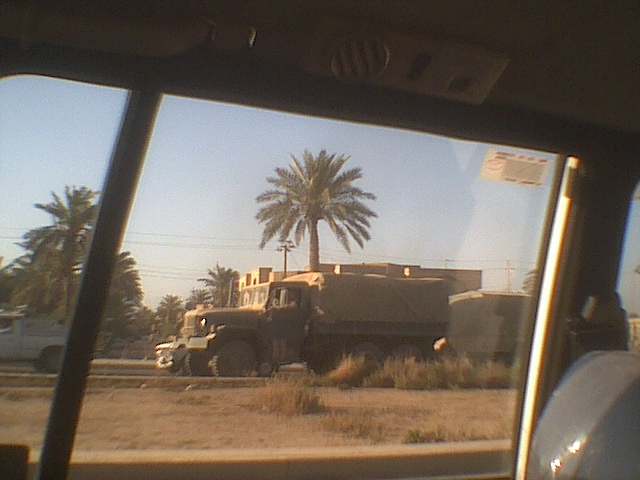
US forces in Baghdad, 2003. US government, public domain.
Bouazizi’s self-immolation in Tunisia ignites uprisings across Tunisia, Egypt, Libya, Yemen, Bahrain, and Syria. Three regimes fall fast (Tunisia, Egypt, Libya); the Syrian and Yemeni cases collapse into long civil wars; Gulf monarchies survive via repression and rentier handouts.
“The Arab Spring is the great natural experiment of the 2010s — a single shock, twelve different regime trajectories.”
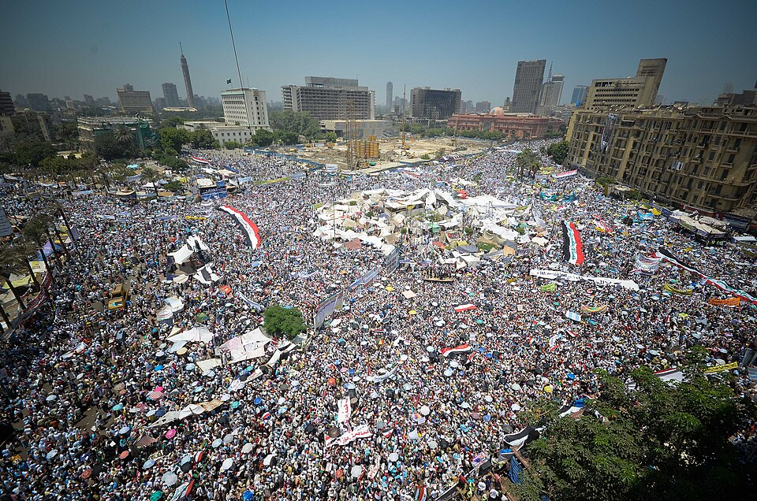
Tahrir Square, Cairo, 2011. Wikimedia Commons, CC-licensed.
The P5+1 and Iran sign the Joint Comprehensive Plan of Action: Iran caps enrichment to 3.67%, ships out the bulk of its low-enriched uranium, and accepts intrusive IAEA monitoring in exchange for sanctions relief. Trump withdraws the US in May 2018.
“The JCPOA is the only durable nuclear ceiling Iran has accepted — and Israel and Saudi Arabia were both willing to wreck the regional order to kill it.”
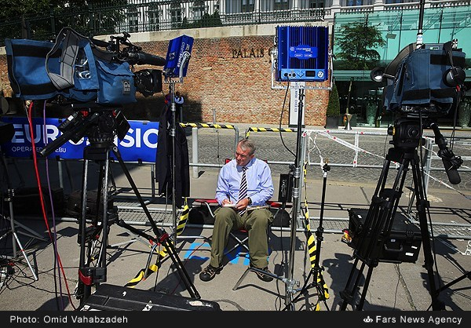
JCPOA talks, Vienna, 2015. US State Department, public domain.
Israel normalises with the UAE and Bahrain on the South Lawn; Sudan and Morocco follow within months. Normalisation is decoupled from Palestinian statehood for the first time — the API formula is officially inverted.
“The Abraham Accords are the operational shift from ‘land for peace’ to ‘peace for prosperity’ — and the regional order Saudi-Israeli normalisation is built on top of.”
Abraham Accords signing, 15 September 2020. White House, public domain.
Saudi–Iran Rapprochement (Beijing)
Riyadh and Tehran restore diplomatic relations under Chinese mediation, ending a seven-year freeze. The deal signals reduced US gatekeeping of Gulf security and Beijing’s first major Middle East political brokerage.
“Beijing 2023 is the moment China stops being the region’s customer and becomes a political fixer.”
Saudi–Iran joint statement signing, Beijing, March 2023. Wikimedia Commons.
Hamas Attack & Gaza War Begins
Hamas-led fighters breach the Gaza perimeter, killing roughly 1,200 Israelis and taking ~250 hostages; Israel launches a sustained military campaign in Gaza. The Saudi–Israeli normalisation track that had been weeks from announcement is paused.
“October 7 is the veto event — the moment the Palestinian question forced its way back into the centre of every regional bargain.”
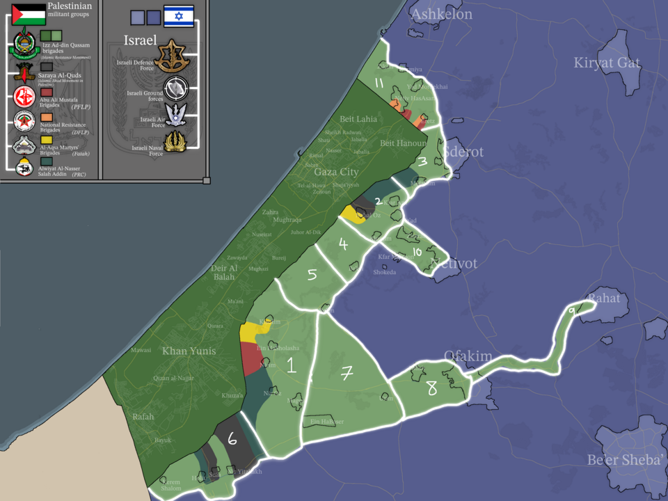
Map of southern Israel / Gaza area. Wikimedia Commons, CC-licensed.
Nasrallah Killed; Israel–Hezbollah War Intensifies
Israel kills Hezbollah Secretary-General Hassan Nasrallah in a Beirut strike following the pager and walkie-talkie attacks; a ground operation pushes into south Lebanon. Hezbollah’s senior command is decimated and its deterrent posture collapses.
“The 2024 decapitation of Hezbollah is the operational removal of Iran’s most credible deterrent — and the precondition for everything that follows in Syria.”
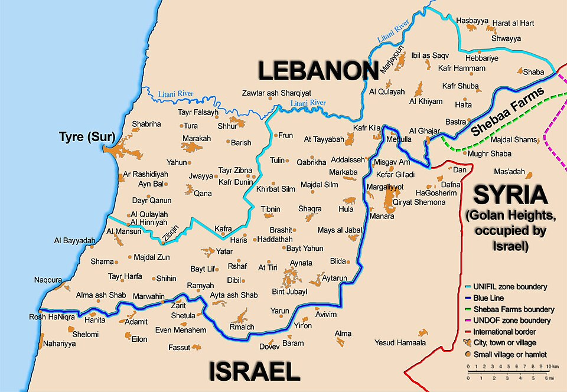
The Blue Line, Israel–Lebanon border. Wikimedia Commons, public domain.
Damascus Falls; Assad Flees to Russia
Hayat Tahrir al-Sham–led forces under Ahmed al-Sharaa enter Damascus after an 11-day offensive; Bashar al-Assad flees to Moscow. Fifty-four years of Assad rule end; Iran’s land-bridge to Hezbollah is severed.
“The fall of Damascus is the operational dismemberment of the Axis of Resistance — Tehran loses Syria, Hezbollah loses resupply, and the Levant rebooks itself overnight.”
Crowds at the Umayyad Mosque, Damascus, 14 December 2024. Wikimedia Commons, CC-licensed.
Sharaa Transition; Sectarian Incidents
Ahmed al-Sharaa is named transitional president; his government negotiates with Western capitals, lifts sanctions in stages, and absorbs SDF formations. Sectarian flare-ups in the Alawite coast (March), Druze south (Suweida, July), and elsewhere expose the fragility of the new order.
“2025 is the test of whether post-Assad Syria can become a state again — early signs are mixed, with diplomatic legitimacy outpacing internal cohesion.”
Sharaa meets US envoy Tom Barrack, May 2025. US State Department, public domain.
Saudi–Israeli Normalisation Track · Ongoing Gaza/West Bank
The Riyadh–Jerusalem track is back on the table conditional on a credible Palestinian political horizon; meanwhile Gaza reconstruction stalls and West Bank settlement expansion accelerates. The regional system is mid-transition: post-Axis, pre-settlement.
“2026 is the regional system between equilibria — the old Axis is broken, the new normalisation order is unfinished, and the Palestinian question is the binding constraint on both.”
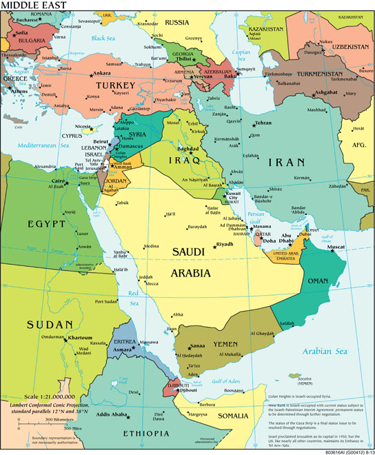
CIA World Factbook political map of the Middle East. US government, public domain.
How to use this page in an essay
- Pick three moments from different decades as the spine of your argument (e.g. 1948 → 1979 → 2024). Continuity vs. rupture writes itself.
- Use the one-liner as the topic sentence of the paragraph that introduces each moment.
- Cross-link the deep-dive for the analytical machinery (causal mechanism, frame, counterfactual).
See the Mock Essays page for graded sample answers that do exactly this.
Back to top